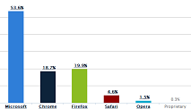

Auto Chart |
|  |
Auto Chart Description: |
Auto Chart permits the generation of many simple chart types. Some of these charts display a single metric at a time, others display multiple metrics at one time. Field 1... - Group - This field will represent the categories along the X axis, the Y axis, or the slices or items displayed on a proportional chart. Only one field will be used to define an axis at any given time. Clicking on one value will drill down to the next field in field order, filtered by the selected value. Field 2+ - Metric - This field will represent the value on the chart. The metric currently being displayed is selectable from a dropdown. |
General Field Definitions: |
Group - This column can be any data type, aggregated or not aggregated. These columns are used to group data in other columns, and often serve as the axis or scale of a particular visualization. Metric - This column can be any data type. It is generally an aggregate, and most commonly a numeric, but does not have to be. These columns are the elements that are being charted, mapped, or displayed on your visualization. Click Here to see the full documentation on the Izenda Wiki.
|